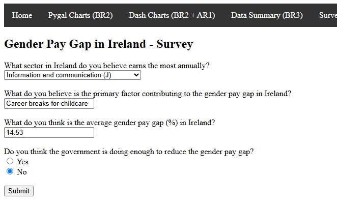

- Meeting the brief
- Dataset was downloaded from the CSO here - https://data.cso.ie/table/DDA02
- The data was cleaned by checking for invalid data types and missing values, and reorganising columns.
- Cleaned data was saved to a new csv file
- Analysed data by creating summary tables for each grouping and a new dataframe with gender pay gap statistics
- Created basic visualisations (Line graph) using pygal, complete with titles, labels and legends and another visualisation (Bar chart) was made with Dash
- Lists and dictionaries used throughout, particularly in getSummary function
- HTML site created complete with navbar where data summaries can be viewed to provide information about the dataset
- All visualisations are present on the information system
- Dash graphs have full interactivity, with dropdown menus, radio buttons and the ability to hover to see details.
- The hover functionality is also present on the Pygal charts
- Simple JavaScript validatePoll function present requiring inputted values to be positive
- Poll collects strings, float and boolean values from users
- Collected data is stored in SQLite database survey.db
- Key summarised facts about the poll data are displayed and the entire database is also available to view
- Recommendations page analyses how well the users know the gender pay gap and makes appropriate recommendations regarding whether enough emphasis or awareness is present
- Investigation
- Plenty of numerical data: unlike the other datasets I looked at, this dataset had lots of numerical values to work with, those being the figures for annual earnings and the annual change % of those earnings.
- Already studied this topic thoroughly: I am also studying Economics for my Leaving Cert, and for our Research Project this year, we were required to investigate wage changes in a particular economic sector. While conducting that research I studied this dataset, among others, and thus am well versed on the topic and knew it would be suitable for the project. Due to this, I did not need to do much more research into this topic.
- Reasonable size: the other datasets that I looked at were quite large with lots of variables, presenting a daunting challenge. When downloading the dataset from the CSO, I was able to pick and choose what aspects of the data I wanted to download - I opted for median rather than mean annual earnings and I decided not to include age as another variable.
- Plan and design
- Clean the initial input data
- Create data summaries
- Generate pygal graphs
- Initialise Flask server
- Render web pages and Dash apps
- Accept form input data
- Calculate form statistics
- I will use pandas to reformat the dataset and drop all irrelevant data
- The cleaned data will then be saved to a new file
- I will use pygal to generate simple graphs that still retain some interactivity
- I will save these as SVGs which can easily be encoded into a html file
- I will build a Flask app to handle the graphs and the various html pages of my information system
- I will create different html pages for the different requirements
- I will use Dash to build fully interactive graphs that use dropdown menus, radio buttons and the ability to hover over data
- I will use html and javascript to do this, storing the data in a database and displaying a summary of said database
- Analyse findings from the dataset, graphs and poll, make recommendations regarding pay in different sectors and highlight gender pay gap as an area for improvement
- Create
- December
- Week 1 (3rd-6th December)
- 3rd - Received the brief and discussed in class, started project diary
- 4th - Investigated existing information systems
- 6th - Investigated possible datasets, chose dataset
- Week 2 (9th-13th December)
- 9th - Wrote up investigation
- 10th - Began plan and design
- 11th - Set up VSCode on school computer
- 13th - Downloaded other relevant software and dataset and continued plan and design
- Week 3 (16th-20th December)
- 16th - Read dataset with python and viewed it
- 17th-18th - Began data processing by creating new columns, dropping redundant data points and reordering columns
- 20th - Saved the cleaned data to a new file that will be used for the rest of the project
- Christmas Break
- January
- Week 4 (6th-10th January)
- 6th - Found mean and median values for each group (by Sector, Sex and Year) based on the other groups
- 7th-8th - Created a function for each group that would put these values, along with max and min values, into a new dataframe
- 10th - Combined the three functions into one single function that can be used for each data group
- Week 5 (13th-17th January)
- 13th-14th - Created a function that would generate line graphs in Pygal
- 15th - Created a function that would call the above for each sex and save the graphs as svgs that can be embedded in HTML
- 16th-17th - Discovered Dash and read up on the documentation and learned how to use it
- Week 6 (27th-30th January)
- 27th - Created basic test apps with Dash
- 28th-29th - Created two Dash apps - a line graph with years on the x-axis and a bar chart with sectors on the x-axis - with dropdown menus and radio buttons to filter data
- 30th - Constructed a Flask server that can run the Dash apps
- Mocks + Mid Term Break
- February
- Week 7 (24th-28th February)
- 24th-25th - created and structured HTML pages, including styling for the images/graphs and a navigation bar
- 26th - Began work on survey and survey summary
- 28th - Continued work on above
- March
- Week 8 (3rd-7th March)
- 3rd - Finished up survey and summary
- 4th - Created recommendations page based on survey data
- 5th, 7th - Worked on report
- Week 9 (10th-14th March)
- 10th-11th - Continued work on report
- 12th, 14th - Created video and continued working on report
- Week 10 (19th March)
- 19th - Ensured file structure is correct and submitted final project
- No protection against invalid data: Although my dataset from the CSO contained no errors, I tried removing some values or changing them to incorrect data types to see how the system would handle them. I then added a function to check if the original dataset has missing values or incorrect data types and to stop the programme if there are.
- Duplicate Dash apps issue: When attempting to integrate a second Dash app into my system, an error occurred where the first app was rendered twice. This was due to an error where I hadn’t properly named the callback function in my Flask server and had mistakenly called for the first app in my HTML. I was able to fix this error by renaming the relevant code blocks.
- No form validation for negative numbers: When submitting negative numbers to the survey asking users what they believe the gender pay gap to be, no error was raised and this data was added to the database. To fix this I added a validate form function to the relevant HTML file that only accepts values more than 0.
- No error handling for empty survey database: When users view the survey page without any previous data submitted, no error message was displayed to indicate there was an issue, rather the statistics and database were displayed with no values. I fixed this by ensuring that if the database was empty, a message would be displayed explaining the issue.
- Evaluation
- One big improvement I would have liked to make on my project would be to better the styling on the information system. As is, I did very little to style the project and used only basic colours. It also may have helped to include more images.
- Another improvement I would have liked to have done would be a page where the different economic sectors were explained in case any of the names were unclear or confusing.
- The survey is another aspect I'd like to see improved, it is rather basic as of now but more in-depth analysis such as correlation analysis could reveal deeper insights into issues like the gender pay gap.
- Finally, I think it could be interesting to look into optimising the system for mobile, something I've never done before as this would prove an interesting challenge and would make the artefact more accessible.
- References and Word Count
- Original Dataset
- Pandas Documentation
- User Guide: https://pandas.pydata.org/pandas-docs/stable/user_guide/index.html
- API Reference: https://pandas.pydata.org/pandas-docs/stable/reference/index.html
- Pygal Documentation
- Documentation: https://www.pygal.org/en/stable/documentation/index.html
- API: https://www.pygal.org/en/stable/api/modules.html
- Dash Documentation
- Tutorial: https://dash.plotly.com/tutorial
- Core Components: https://dash.plotly.com/dash-core-components
- HTML Components: https://dash.plotly.com/dash-html-components
- Flask Documentation
- User Guide: https://flask.palletsprojects.com/en/stable/
- API: https://flask.palletsprojects.com/en/stable/api/
- HTML, CSS, JavaScript, form function
- Plotly Documentation
- Plotly Express: https://plotly.com/python/plotly-express/
- Plotly Graph Objects: https://plotly.com/python/graph-objects/
- Pathlib Documentation
- SQLite Documentation
- Documentation: https://www.sqlite.org/docs.html
- Tutorial: https://www.sqlitetutorial.net/sqlite-python/
- Existing Research Systems
- Ireland’s COVID19 Data Hub: https://covid19ireland-geohive.hub.arcgis.com/
- Data.gov.ie: https://data.gov.ie/
- Gapminder: https://www.gapminder.org/
- Other Datasets
BR1 - Collect and prepare the data
Evidence for BR1:
BR2 - Data analytics and visualisation
Evidence for BR1:

BR3 - Create a basic interactive information system interface
Evidence for BR3:
AR1 - Graph Interactivity
Evidence for AR1
AR2 - Poll
Evidence for AR2
AR3 - Recommendations page
Evidence for AR3
I looked at several websites to get ideas on how to present my data on the final webpage. I took particular notice of Ireland’s COVID-19 Data Hub; I felt that it was a good standard to aim for, and I liked the various filtering users could perform on the data using dropdown menus and sliders, along with the ability to hover over graphs and charts to view figures.
I also looked at data.gov.ie, which contained lots of open data pertaining to Irish statistics. There was a wide variety of data available and lots of different filtering options and chart types. I also liked the idea of displaying the dataset underneath the charts.
Finally, I also looked at gapminder, which used chart types like a line graph, bubble chart and pyramid along with a time slider to display data relating to environmental and social issues across the world. It also had a play button which animated the data and I could see emerging trends.
I liked elements from all 3 information systems, but the key elements that I wanted to keep in my information system were that ability to filter data, hover over data points and displaying the original dataset with the graphs.
| Topic Idea | Comic Books | Movies | Median Annual Earnings |
|---|---|---|---|
| Place looked | Kaggle | IMDb | CSO |
| Advantages | Interested in and already knowledgeable on the topic, likely to be unique | Popular topic, large dataset from a well-known source | Already knowledgeable on the topic, plenty of numerical values and a reasonable size to handle |
| Disdvantages | Existing datasets aren’t well refined and lack numerical data | Datasets simply too large, unsure about legality, lacking in numerical data | Not as unique as other topics, may be difficult to find a unique angle |
I chose to use the CSO dataset on Median Annual Earnings in Ireland from 2011-2023, by Economic Sector and Sex, for the following reasons:
At its most basic, my project will work as follows:
This plan will meet the requirements by
| 1 | 2 | 3 | |
|---|---|---|---|
| Basic Requirements | Collect and prepare the data:
|
Data analytics and visualisation:
|
Create a basic interactive information system interface:
|
| Advanced Requirements | Ensure that users can interact with the data visualisations on the information system:
|
Create a form or poll relating to your chosen dataset on your information system:
|
Create a separate area on your information system that makes recommendations:
|
I decided to use an Agile framework for this project, specifically using the 5D design process. I used this as it allowed me to iterate over my project, which ended up coming in handy as I discovered new technologies during the completion of the project, causing me to go back and take a new approach to that part of the project.
The primary technologies I will use in my project are:
| Name | Why did I use it? |
|---|---|
| VSCode | I had previous experience with VSCode, many extensions available, allowed me to seamlessly work on multiple files at once |
| Notepad++ | Simple to use, ideal for working on html files and allows for tabbed editing |
| Pandas | Previous experience with pandas, ideal for data manipulation, fast and simple to use |
| Pygal | Easy to use, produces simple graphs |
| Dash | Allowed me to create more advanced interactive graphs, plenty of customisation |
| Flask | Required to properly implement my dash apps in my information system, helps handle the poll |
Here is the flowchart for my project (Open in a new tab to zoom in, otherwise in images folder):
Project Timeline Overview
Here is a timeline showing the key progress milestones of the project:
Here is a full progress log for each day of the project:
Testing Overview
When undergoing the testing process for this project, I encountered several issues that I was able to address and improve my code. I employed different types of testing such as unit testing, function testing, system testing, regression testing, and black box testing.
Here are some problems I noticed during testing and how they were fixed:
Data Processing Test Table
| Test ID | Description | Test Type | Input | Expected Outcome | Actual Outcome | Verdict | Comments/Fix |
|---|---|---|---|---|---|---|---|
| 01 | Test loading of cleaned data CSV | Unit Test | Original dataset from CSO | Dataframe is loaded with correct original columns | Dataframe is loaded as expected | Pass | N/A |
| 02 | Test cleanData function | Function Test | Original dataset from CSO | Dataframe is cleaned and reordered according to function | Dataframe is cleaned as expected | Pass | N/A |
| 03 | Test handling of missing data in CSV | Unit Test | Modified dataset from CSO with missing values | Error due to missing values | “Cleaned” data is generated with missing values | Fail | Added if statement to print an error message and stop running if there are missing values |
| 04 | Test handling of incorrect data types in CSV | Unit Test | Modified dataset from CSO with incorrect data types | Error due to incorrect data types | Error due to attempted data type conversion | Fail | Added if statement to print an error message and stop running if there are values with incorrect data types |
| 05 | Test getSummary function for each group | Function Test | Cleaned dataframe grouped by sector, sex or year | Summary dataframe with mean, median, max, and min values for each group | Summary dataframes match expected values | Pass | Initially in three separate functions for each group before being combined for efficiency |
| 06 | Test createGraph function | Function Test | Cleaned dataframe filtered by sex, graph title, and years data | Graph is created without errors | Correct graph is created without errors | Pass | N/A |
| 07 | Test saveGraphs function | Regression Test | Cleaned dataframe filtered by sex, years data | Calls the createGraph function for each sex and saves the created graphs to SVG files | Successfully calls the function; graphs are saved to the correct files | Pass | N/A |
| 08 | Test gpgStatistics function | Function Test | Cleaned dataframe filtered by sex | Create new dataframe with correct gender pay gap statistics | New dataframe with correct statistics | Pass | N/A |
| 09 | Test analyseData function | Regression Test | Cleaned dataframe | Return summaries for each group, create and save graphs and generate gender pay gap statistics | Returns expected results | Pass | Calls upon the getSummary function for each group, calls the saveGraphs function, and calls the gpgStatistics function |
Flask/Dash Test Table
| Test ID | Description | Test Type | Input | Expected Outcome | Actual Outcome | Verdict | Comments/Fix |
|---|---|---|---|---|---|---|---|
| 10 | Test Dash app layout for displaying graphs | System Test | N/A | Dash app displays graphs with correct data, layout and filters | Dash app displays graphs as expected | Pass | N/A |
| 11 | Test Flask route for rendering Dash charts page in HTML | System Test | N/A | Dash charts page is rendered correctly on a HTML page | Dash charts page is rendered as expected | Pass | N/A |
| 12 | Test Dash app rendering after adding a second Dash app | Regression Test | N/A | Both Dash charts will be rendered | The same Dash app was rendered twice | Fail | Added different naming scheme to Dash apps - dash1, dash2, etc |
| 13 | Test callback function of Dash apps | Black Box Testing | Changing values of dropdown menus and radio buttons | Graph updates based on selection | Graph updates as expected | Pass | N/A |
Survey and Submission Test Table
| Test ID | Description | Test Type | Input | Expected Outcome | Actual Outcome | Verdict | Comments/Fix |
|---|---|---|---|---|---|---|---|
| 14 | Test survey form submission | Unit Test | Sample form data | Form data is saved to the database and user is redirected to the summary page | Form data is saved and user is redirected as expected | Pass | - |
| 15 | Test summary page calculations | Black Box Test | Survey responses | Summary page displays correct percentages and statistics | Summary page displays correct data | Pass | - |
| 16 | Test recommendations page calculations | Black Box Test | Sample survey responses | Recommendations page displays correct messages and statistics | Recommendations page displays correct data and expected message | Pass | - |
| 18 | Test survey form submission with negative numbers | Unit Test | -11.11 | Form submission fails with validation error | Form submission succeeds with incorrect data | Fail | Added form validation to only accept positive numbers |
| 19 | Test summary and recommendations pages when there are no responses | Unit Test | Empty survey.db | Error message that there are no responses | Empty database or no statistics displayed, no indication of error | Fail | Added if statement to display error message if there are no responses |
Here are some other issues I encountered during the development process:
HTML Form Submission
When I was first writing the code for the survey submission, it was sent with the GET method rather than POST:
<form onsubmit="submitPoll(event)">
<!-- Form fields here -->
<input type="submit" value="Submit">
</form>
This method failed to submit the form data to a poll but instead appended the data to the URL. I investigated this issue and found the difference between the GET and POST method, and was able to adjust my code accordingly:
<form onsubmit="submitPoll(event)" method="post">
<!-- Form fields here -->
<input type="submit" value="Submit">
</form>
This fix ensured that the form data was properly sent in a manner that could be read by SQLite and inserted into the survey database.
Database Issues After Updating Code
As I was constructing the form I ended up adding in new questions. When I attempted to run the new code I was getting the following error in the terminal:
("INSERT INTO responses (sector, factors, payGap, gov) VALUES (?, ?, ?, ?)",
sqlite3.OperationalError: table responses has no column named gov
The issue was that after adding in a new question, I was attempting to pass data to the responses table in my SQLite database under the column gov, which wasn’t in the database. Thankfully the fix was relatively simple as I just had to delete the existing database and ensure the new one that would be created would include the gov column:
# Initialise the SQLite database
def init_db():
conn = sqlite3.connect('survey.db')
cursor = conn.cursor()
# Add in the column for the responses to the government question
cursor.execute('''
CREATE TABLE IF NOT EXISTS responses (
id INTEGER PRIMARY KEY AUTOINCREMENT,
sector TEXT,
factors TEXT,
payGap REAL,
gov BOOLEAN
)
''')
conn.commit()
conn.close()
init_db()
Analytics Algorithm
Here is a snippet of my code, showcasing my getSummary function:
# Get summary statistics function
def getSummary(df, groupByColumn):
# Group data by the specified column
groups = {group: data for group, data in df.groupby(groupByColumn)}
# Initialize a list to store the results
results = []
# Iterate over each group to calculate summary statistics for mean,
median, max and min values
for name, group in groups.items():
meanValues = group.mean(numeric_only=True).round(2)
medianValues = group.median(numeric_only=True).round(2)
maxValue = group.max(numeric_only=True).round(2)
minValue = group.min(numeric_only=True).round(2)
# Create a dictionary with the summary statistics for the
current group
result = {
group_by_column: name,
'Mean Annual Earnings': meanValues.get('Median Annual
Earnings (€)', None),
'Median Annual Earnings': medianValues.get('Median Annual
Earnings (€)', None),
'Max Annual Earnings': maxValue.get('Median Annual Earnings
(€)', None),
'Min Annual Earnings': minValue.get('Median Annual Earnings
(€)', None),
'Mean Annual Change': meanValues.get('Annual Change (%)',
None),
'Median Annual Change': medianValues.get('Annual Change
(%)', None),
'Max Annual Change': maxValue.get('Annual Change (%)',
None),
'Min Annual Change': minValue.get('Annual Change (%)',
None),
}
# Append the result to the results list
results.append(result)
# Create a dataframe from the results list
summary = pd.DataFrame(results)
# Return the summary statistics and the grouped data
return summary, groups
Here is a breakdown of how this works:
# Get summary statistics function
def getSummary(df, groupByColumn):
This defines the function getSummary, which takes in two variables: df and groupByColumn
# Group data by the specified column
groups = {group: data for group, data in df.groupby(groupByColumn)}
This line groups the dataframe `df` by the specified column groupByColumn. It creates a dictionary groups where the keys are the unique values of the specified column, and the values are the corresponding subsets of the dataframe.
# Initialize a list to store the results
results = []
This line initializes an empty list results to store the summary statistics for each group.
# Iterate over each group to calculate summary statistics for mean,
median, max and min values
for name, group in groups.items():
This line starts a loop that iterates over each group in the groups dictionary. name is the key (unique value of the specified column), and group is the corresponding subset of the dataframe.
meanValues = group.mean(numeric_only=True).round(2)
medianValues = group.median(numeric_only=True).round(2)
maxValue = group.max(numeric_only=True).round(2)
minValue = group.min(numeric_only=True).round(2)
These lines calculate the mean, median, maximum and minimum values of the numeric columns in the current group. The numeric_only=True parameter ensures that only numeric columns are considered, and the .round(2) method rounds the value to 2 decimal places
# Create a dictionary with the summary statistics for the
current group
result = {
group_by_column: name,
'Mean Annual Earnings': meanValues.get('Median Annual
Earnings (€)', None),
'Median Annual Earnings': medianValues.get('Median Annual
Earnings (€)', None),
'Max Annual Earnings': maxValue.get('Median Annual Earnings
(€)', None),
'Min Annual Earnings': minValue.get('Median Annual Earnings
(€)', None),
'Mean Annual Change': meanValues.get('Annual Change (%)',
None),
'Median Annual Change': medianValues.get('Annual Change
(%)', None),
'Max Annual Change': maxValue.get('Annual Change (%)',
None),
'Min Annual Change': minValue.get('Annual Change (%)',
None),
}
These lines create a dictionary, result, that stores all of the summary statistics calculated above
# Append the result to the results list
results.append(result)
The result dictionary is then appended to the results list
# Create a dataframe from the results list
summary = pd.DataFrame(results)
This is then converted into a dataframe called summary
# Return the summary statistics and the grouped data
return summary, groups
Finally, the summary dataframe and the groups dictionary are returned
The summary data can now be displayed on the information system and the groups dictionaries' sexes and years are used later in creating graphs.
Does the project meet the requirements?
I believe that my project fulfils all of the requirements in the brief to a reasonably good to high standard. However, I feel like Advanced Requirement 3 wasn't fully clear on whether any actual code was supposed to be used or if it was simply your opinions based on your analysis which leaves me unsure if it was answered correctly.
On the other hand, I am particularly proud of the Dash apps. Having previous experience with pandas and graphing in python, one of the challenges that I set for myself was to create a dynamic graph with dropdown menu functionality, and I am quite pleased that I managed to make it work.
How would I further improve/iterate on this project?
References
Word Count
| Section | Word Count |
| Meeting The Brief (400) | 257 |
| Investigation (400) | 401 |
| Plan And Design (400) | 404 |
| Create (1000) | 1008 |
| Evaluation (300) | 273 |
| Total (2500) | 2343 |